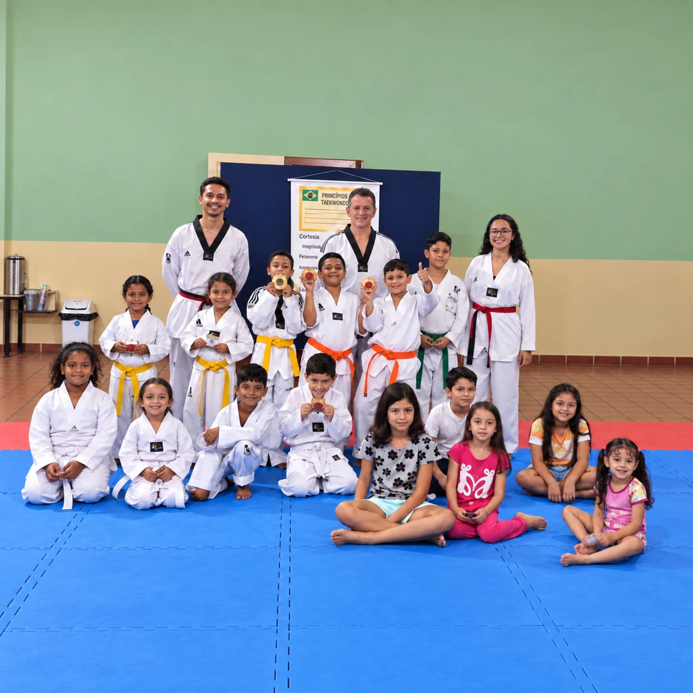
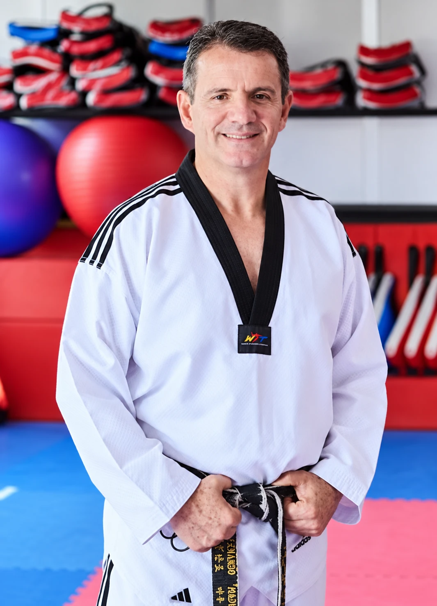
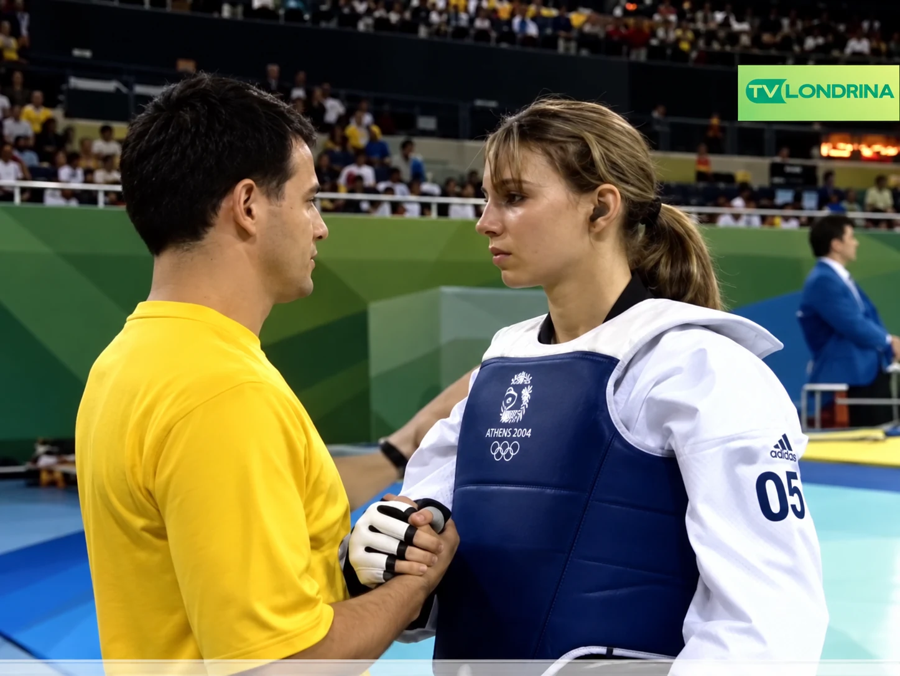
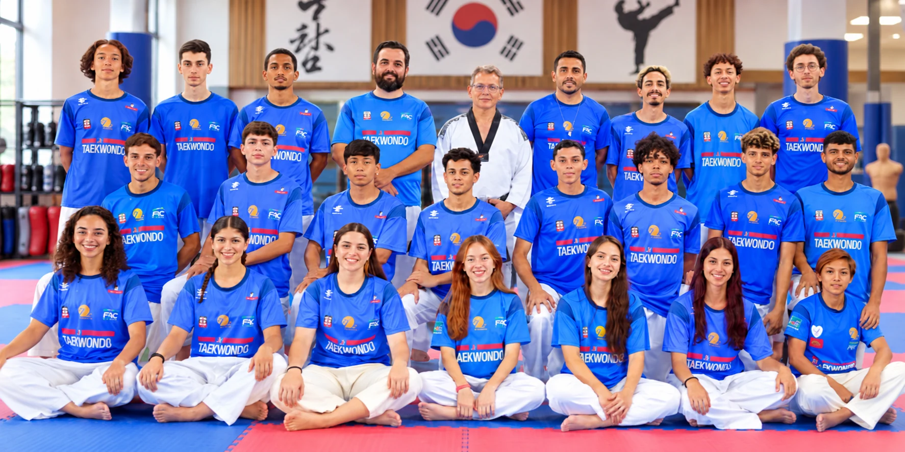
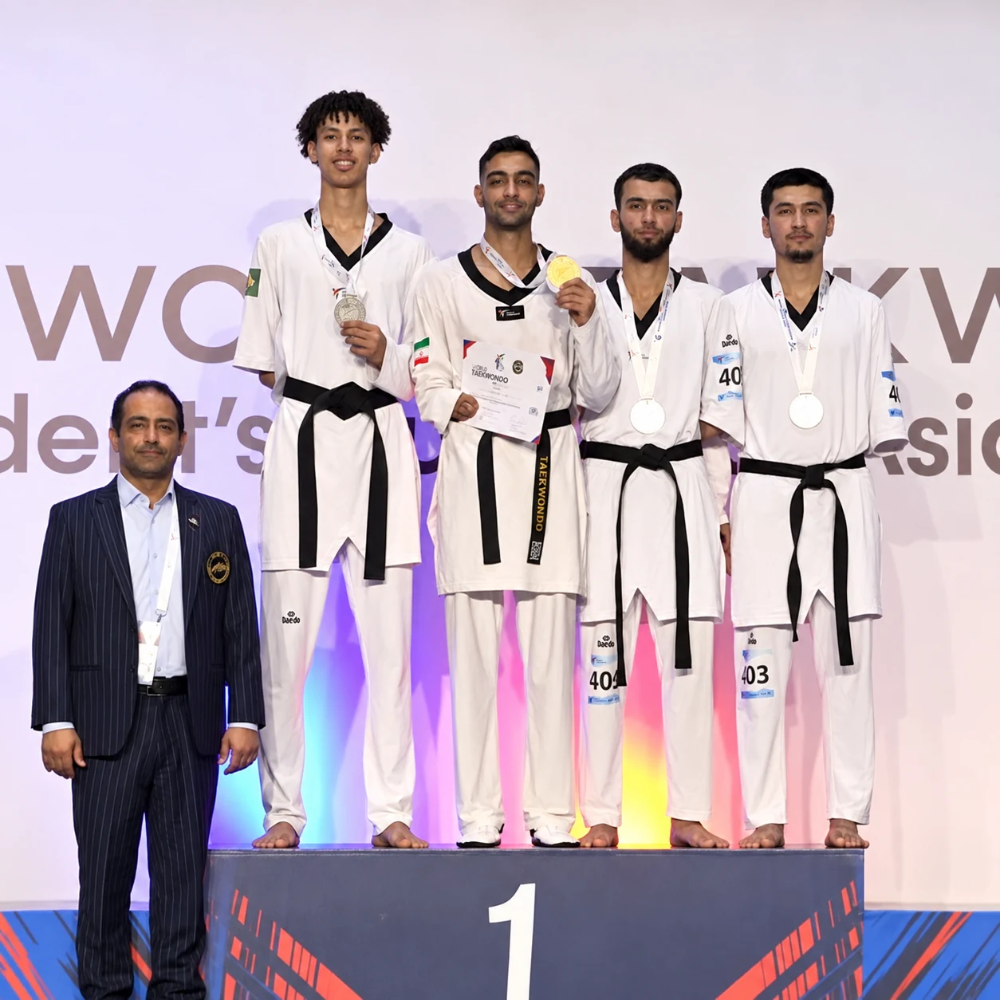
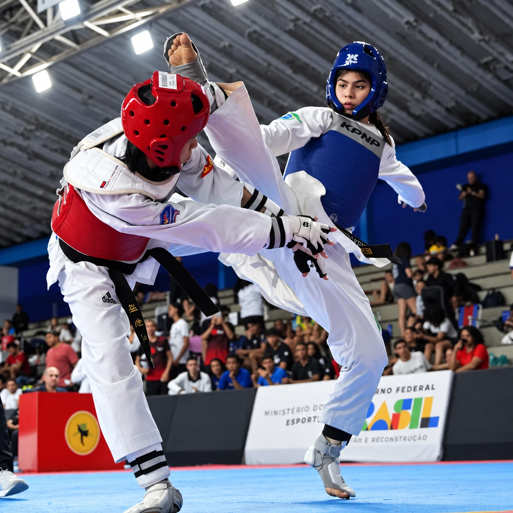

Infantil
Um ambiente de aprendizado para desenvolver coordenação, foco, respeito e confiança.
INICIAÇÃO E PROJETOSDo primeiro treino às competições: um lugar para desenvolver disciplina, confiança e força a cada passo.
Na Equipe Madureira, cada pessoa tem seu próprio ponto de partida. O Taekwondo é o caminho para ir além.
À frente do CT está o Mestre Fernando Madureira, faixa preta 7º Dan e ex-técnico da Seleção Brasileira. A equipe atende desde crianças em iniciação até atletas voltados à competição.
Converse com a equipe

A história de Fernando Madureira com o Taekwondo começou em fevereiro de 1982, na cidade de Londrina, quando ele iniciou seus primeiros treinos sob a orientação do professor Sidney Kayamori. Com muita dedicação, ele se destacou rapidamente e construiu uma carreira sólida como competidor de alto nível, chegando a integrar a Seleção Brasileira.
Na década de 1990, Madureira decidiu transmitir seu conhecimento e começou a dar aulas em locais tradicionais de Londrina, como a ACEL e o Londrina Country Club. O grande marco da sua trajetória aconteceu em 1997, quando, aos 29 anos, ele reformou um prédio na Avenida JK e fundou a Academia Madureira, criando um polo definitivo para a modalidade.
Sob o seu comando, a equipe cresceu e ele idealizou o Brazil Open de Taekwondo, um dos torneios mais importantes do país. O reconhecimento ao seu trabalho o levou ao posto de técnico da Seleção Brasileira de Taekwondo por vários ciclos olímpicos.
O ápice dessa jornada ocorreu nos Jogos Olímpicos de Pequim 2008, quando Fernando Madureira estava no corner como treinador de Natália Falavigna na conquista da histórica medalha de bronze, a primeira do Taekwondo brasileiro em Olimpíadas.
Ao longo dos anos, ele expandiu sua academia para novos polos, alcançou a graduação de 7º Dan, presidiu a Federação Paranaense de Taekwondo e atuou como vereador em Londrina. Sua equipe continua revelando novos atletas para a Seleção Brasileira.
O seu próximo passo
começa no tatame.
Seja para começar, voltar a se movimentar ou competir: descubra o programa que combina com você.

Um ambiente de aprendizado para desenvolver coordenação, foco, respeito e confiança.
INICIAÇÃO E PROJETOS
Treine com propósito: condicionamento, bem-estar e fundamentos de defesa pessoal.
FITNESS E DEFESA PESSOAL
Preparação para atletas que buscam evolução técnica e desempenho nas competições.
ALTO RENDIMENTOResultados de eventos específicos, apresentados com seu ano e fonte.
atletas que treinavam no CT Madureira na delegação de Londrina ao Brasileiro de 2026
Prefeitura de Londrina, 2026 ↗medalhas da Equipe Madureira na Copa Regional Sul de 2023
Jornal União, 2023 ↗graduação informada para o Mestre Fernando Madureira
Dados fornecidos para este projeto
Uma aula pode ser o começo de uma nova história.
Encontre um horário para começar a treinar. Converse com a equipe para saber qual turma combina com sua idade e seu objetivo.
Consultar minha turmaVisite a equipe no Centro de Londrina e descubra de perto como é treinar com a Madureira.
Av. Juscelino Kubitscheck, 346Fale com a equipe e agende sua aula experimental.
Agendar pelo WhatsApp